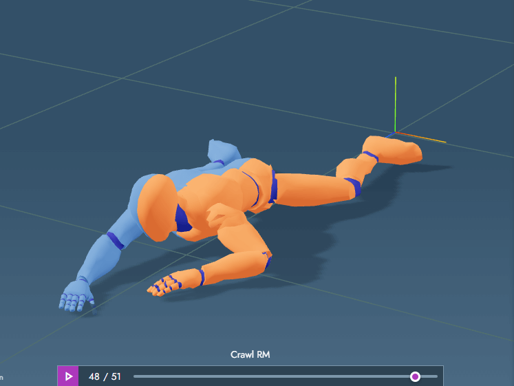
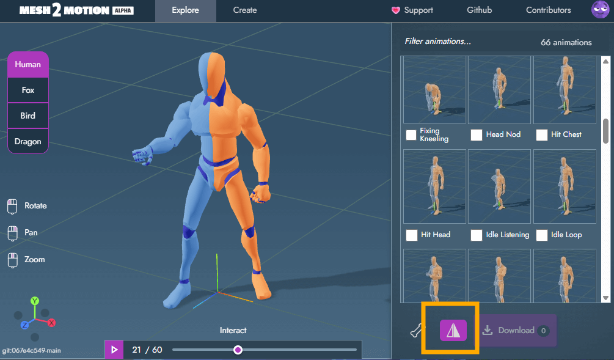
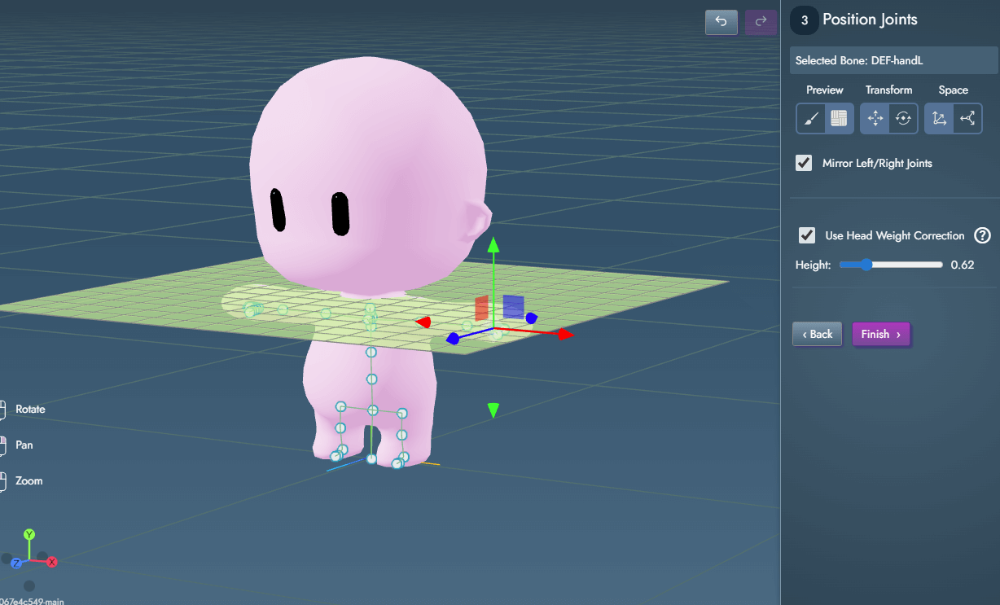

News
Update 10: Spiders and Snakes
Spider and Snake rig
The spider comes with 9 animations including the basics like idle, walk, attack, and death. The snake comes with 7 animations with similar animations. Part of adding these was to expand the variety of rigs to see how well this tool can support different types of creatures.
Skeleton Editing Improvements
Easier to drag bone joints to the right position. The position will snap to the middle of the mesh. The other transform options also exist as a toggle if you want to still use that.
- Make bone joints display slightly larger and semi-transparent to help see overlapping joints.
- When moving bones with mirror mode, hide one side of bone joints to make positioning easier to see bones.
- Add option to move bones independently so they don't affect the child bone positions.
- Add an option for moving bones to volume center for easier placement
Other release notes
- Model upload: Add a 3d transform widget to fix model position after adding. (by new contributor DarthMarino)
- Add a new gear icon to show settings. Theme toggle was moved here. Also added new way to control light intensity. More options might come later like turning on/off grid or showing data.
- Human animations: Tweaked Quaternius neck bone position to be in line with custom animations for consistency.
- Animation list: Improve 'lazy loading' of previews to minimize image 'popping' that was happening
- Make all registration animation poses called "Rest Pose" across rigs instead of calling all a T-pose for standardization.
- Upload your model: Change A-Pose correction for human to arm extension since that is done automatically now.
- Added a new learn section to the site to add YouTube videos or other training material
- Upload your own rig: Added skeleton hiearchy display for better debugging
- Upload your own rig: Show how many skinned meshes exist in the target rig for better debugging
- Upload your own rig: Do a better job clearing all bone mappings when using the clear all button
- Upload your own rig: Add text filtering to source and target bones to help find them quicker.
- Skinning algorithm: Try to add a more targeted skinning algorithm based on bone types: torso, limbs, wings, tail for better deformation.
- Rename "quadraped" verbiage to "fox" since we might have other quadraped types in the future
- Tech upgrade: Have all the rigs use a configuration file to dynamically populate the UI areas. This will make it much easier to add new rigs in the future
- Tech upgrade: Upgraded to latest libraries: three.js, typescript, vite, eslint
- Tech upgrade: Add ability in code to add extra 3d models. Added an A-Pose human animation for testing for now.
Update 9: Import Custom Animations
Import custom animations

One issue that I had was tring to tell animators how to test their Blender animations in the Mesh2Motion app. There was no easy way without pulling down the source code and manually loading in their animation file. Now the workflow is much easier. Much faster and easier verification before they might submit their animations to be included.
This could also have a secondary benefit to allow people to make animation packs they could provide for free, or sell, or sites like gumroad. People could spend a bit of money and download a GLB file with animations. Those custom animations could then be imported into Mesh2Motion and used with the auto-rigging and default animations.
Other release notes
- Added a number of Quatnerius animations from his latest pack for the human rig.
- Handle meshes with multiple materials on import. Previously there were errors when a mesh had multiple materials causing silent errors.
- Retargeting: Fix animation data slowly getting messed up during retargeting process and export.
- Retargeting: Make sure at least one bone mapping is done before allowing retargeting.
- Retargeting: Shorten name for retargeting naming to "RT" to simplify names.
- Move the toggle bone display to the player since import button expanded the tools area too much.
- Updated human rig bones and animations to reflect new simplified bone naming.
- Add contributor page to Github repository for better visiblity.
- Improve tooltip visuals and instructions for download button
- Minor styling for back buttons in process to help visual flow.
- Upgrade three.js code library to 182
- Clean up dragon bones in skeleton file to only include "deform" bones
Update 8: Kaiju & Import Rigged Meshes
1/22/2026 | Scott Petrovic
New Kaiju Rig

I thought this would be fun to do. I have a deep love for kaiju movies and wanted to create a rig with this. Comes with 10 animations:
- Attack
- Death
- Hit
- Idle
- Roar
- Swim
- T-Pose
- Tail Attack
- Walk
- Walk Root motion
Upload Your Rigged Mesh (Experimental)

Upload an already rigged mesh to use the Mesh2Motion animations. This is a large feature that is still a work in progress. I have been working on it for the past two months. I want to push out the current state to see if people even use this before developing it more. There are two main use cases I could find for this:
- You have a custom model where the Mesh2Motion web rigger cannot handle well. You want the animations, but you are a 3d person that wants control over the weight painting in your 3d tool. For this, people can use the Blender rig linked and do all the custom weight painting.
- People have rigged meshes that use other bone structures or naming. This could be from other tools that do rig generation and have the vertices assigned to the bones already.
The second use case with alternate bone names is where the feature gets complex. There are two main areas to think about when working with alternative bone structures. There is bone mapping, and bone roll. Bone mapping can be done manually, by assigning one named bone to another. Common mappings can use a template to go from one bone format to another.
The "bone roll" correction is often needed in addition to the bone map process. Even if two bones look the same, one could be rotated differently along the axis that pierces through the ends. If this orientation is different, all the rotation data is going to be wrong. A new contributor (Sketchpunklabs) provided an algorithm/example to accomplish this. This was extremely helpful.
Other release notes
- 13 New Human animations: Backflip, Dizzy, fighting idle, fighting left and right jab, flying forward, flying two-hand forward, jumping jacks, levitate entrance, levitate idle, pushup, sleeping, throw object
- Fixed iOS bug that wouldn't allow uploading 3d file formats
- Add support for meshes that store attributes in interleaved format
- Fix potential memory leak when weight paint re-generation happens
- Make page titles consistent
- Tried making page names a bit more descriptive with their use case
Update 7: Root Motion, Mirroring, New Animations
11/18/2025 | Scott Petrovic
There is a balancing act that happens every development cycle with doing code related features, fixes, and creating animations. While the Mesh2Motion platform still needs work with better rigging features, I understand that people also want more animations as well. As a one-person team, I have to prioritize the biggest pain points I hear about from social media without getting burnt out. This means releases will be small. This is still just a hobby project I work on in my free time.
I have been learning more about how to make animations using Blender with video tutorials. A nice feature I have been starting to use recently is the "motion paths" for an animation. This is shown in the skeleton tab in Blender's property area. It does a great job communicating two things: how smooth the animation paths are with showing the arcs, how evenly spaced keyframes are to have smooth animations. I would still not consider myself an animator, but am getting more comfortable with the workflow that Blender provides. If a professional animator comes by and wants to give me any pointers, I would welcome the advice.
Finally, if you want to see this project grow and give me more motivation, consider giving a small tip. With this project, or any open source project, you would be surprised the positive energy that is transferred to the person working on it. I just added Stripe integration recently with a number of options as well as a Venmo option for USA peeps.
Root motion support

Root motion supported for animations. If an animation has a "RM" at the end, root position keyframes can be changed. Only one animation exists now in the app to start as a proof of concept. This will work for all skeleton types.
Mirror animations
On the animation listing step, there is an option to mirror the animations. All animations are affected for now so you cannot cherry pick which animations you want mirrored. Long term I want to give each animation more options to control this. The initial goal was to get the code logic needed to do the mirroring.

Head/body separation option

When editing the skeleton, there is now an option to separate the head from the body for human skeletons. This is useful for chibi style characters where the head is much larger than normal. There are more situations this tool doesn't handle such as long hair behind the model's back. I might improve this feature in the future to be more flexible instead of a simple plane control.
New animations
I haven't been very explicit with how you can use all these animations. Everything art related (3d models, animations) are CC0. This means you can use it for anything personal or commercial. You can remix, modify, or improve any of the content I have. I updated the Github repository with a bit more information around this in the license area.
I am starting to spend more time making animations as well. As I get better at animations I will probably come back to some of these, but they seemed alright for now. These are the new animations added for this release:
Fox animations added:
- Fall
- Idle Alert
- Jump
- Bark
Human animations added:
- Angry
- Bow
- Confused
- Consume Power up
- Crawl
- Crawl RM (root motion)
- Dance Body Roll
- Dance Charleston
- Dance Reach Hip
- Defend
- Head Nod
- Idle Listening
- Meditate
- Power up
- Reject
- Run anime
- Tired Hunched
- Tired Kneeling
- Throw Ball
- Victory
Other release notes
- Added Progress loader when loading all the animations since the file size will start getting larger
- Better bone selection by taking the camera zoom level into account.
- Fix for dragon rig in the head area that was caused by a bone roll rotation issue
- Removed extra neck bone on human rig to give better default results.
- Added reset buttons for A-Pose and skeleton scale for better UX
- Explore page uses a different camera angle to better show off perspective
- Expand camera zooming range to help working with smaller and larger model files
- Change slider value range to allow skeleton scale to shrink more
- Validate FBX loading to verify broken images and replace with default material. A message is shown if a broken image is found
- Reset scale to 1.0 when importing model to normalize import process better
- Show the GIT commit hash on the bottom left to know what version is released. This is specific to how Cloudflare works, so it probably won't work if you host it yourself using something else.
- Added support link to top navigation in case people want to support project using Stripe platform
- Platform tech upgrades: Node v24.11, three.js v181, Vite 7.2